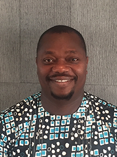

Order your Adanu book today!

Celebrating 15 Years
This uplifting story of personal journey, vision, and unconditional love connects rural Volta Region villages with the world outside of Ghana. Adanu: Helping That Helps portrays the need for opportunity in Ghana and how access to schools and education builds strong communities and facilitates hope. The book brings you inside the story of Adanu, Richard’s vision for his people, and the impact he and his organization are having in the Volta Region of Ghana, one village at a time
Richard Yinkah
Richard Yinkah, Founder of Adanu, is on a mission to build schools throughout the Volta Region of Ghana, Africa. His entrepreneurial spirit, deep commitment, and enduring partnerships have grown Adanu into a thriving organization. He believes education, collaboration, and hard work are key elements of personal empowerment, hope, and unprecedented opportunity for community development.